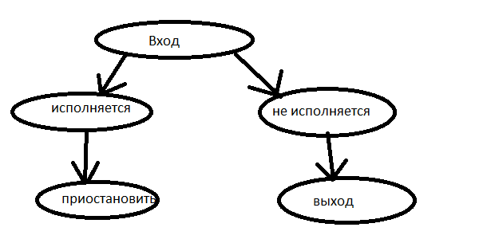

24.12.2014
Подгружаемыми модулями
serial Processing
Команды выполнялись последовательно
- Однозадачные - простые
-
параллельная обработка (пакетная обработка).simple batch system
запуск процессов партиями. 15мс
31мс
MS-DOs -однозадачная
Система разделения времени:
- многодачная
- мультизадачная
| 1 |
ожидание |
1 |
ожидание |
1 |
|
2 |
ожидание |
2 |
ожидание |
| 1 |
2 |
::: |
1 |
2 |
ожидание |
Архитектура ОС. Классификация ОС.
Основные механизмы ОС.
- Системные вызовы system calls - это механизм позволяющий пользовательским
программам обращаться к услугам ядра ОС (интерфейс между Ос и прогой)
Примеры: при написании программ мы подключаем библиотеки(вызов функций
из библиотек),
- Прерывание(аппаратное прерывание - hardware interrupt) - событие генерируемое внешним
по отношению к процессору устройствам
Примеры:аппаратные(ввод с клавиатуры), программное(задача прервала работу процессора).
- Исключительная ситуация - это событие возникающее в результате попытки
выполнения программы, команды, которая по каким-то причинам не может быть выполнена до конца.
Примеры: занимаем память жесткого диска при нехватке оперативной памяти.
или наоборот ищем ячейку памяти не находим и обращаемся к оперативной, деление на ноль!!
Архитектура
Ос состоят из множ-ва взаимосвязанных модулей, каждый из которых
условно относится к одной из двух групп ядро или модуль.
Ядро - это модули выполняющие основные внутрисистемные функции Ос.
Эти функции недоступны для приложений. API(функции ядра). Все
модули Ос постоянно находятся в оперативной памяти (является резедентами)
модули- вспомогательные функции ОС. (редакторы и т.д.)
Вспомогательные делятся на
- утилиты
- системные обрабатывающие программы
- библиотеки процедур
- программы предоставляющие пользователю допол. услуги (сервесы).
Для приложений функ-ии ядра недоступны.
уровня ядра (cernal)
- уровень ядра(super wizer)
- уровень пользовательский(прикладной) Н.: приложения пользователя, утилиты.
аппаратута компа должна поддерживать как минимум 2 режима работы:
- пользовательский
- привелегированный
переключение процессора из пользовательского режима в режим ядра
инициирует системный вызов
Типы архитектур ОС:
- монолитное ядро - все приложения работают в прилигированном режиме, равноправны.
Представляет собой набор процедур, каждая из которых может вызвать каждую. Все компоненты ОС
являются состовнами частями одной программы. Ядро совпадает со всей системой.
Главный недостаток - сборка ядра(компиляция) осуществляется отдельно от каждого компьютера
незащищенное ядро, можно навердить ядру через программу, если обособленное
тогда просто так нельзя вмешаться.
-
многослойная структура THE() (playerd systems) разработана Деикстрой
--пользовательские приложения
- 0 уровень - занимался распределением времени
- 1 уровень - управлял памятью
- 2 уровень - управлял связью между консолью оператора и процессами
- 3 уровень - управлял устройством ввода вывода и буферизировал потоки инфы к ним и от них.
- 4 уровень - на уровне пользовательских прог.
- 5 уровень - системный оператор
+7 978 781 58 10 - Фериде, если оп.
Слоенные системы хорошо характеризуются, тем что каждый слой отвечает за
свой уровень. Нужно лишь понимать что они делают, хорошо тестятся,
при необходимости заменить какой-то слой не нужно заменять всю ОС.
Недостаток - тяжело правильно определить порядок слоев и правильно отнести необходимые
функции к нужному уровню.
Менее эфективные , чем монолитные.
микроядерная -
в привилигированном режиме остается работать только очень небольшая часть ОС (микроядро).
микроядро защищенно от остальных частей ОС и приложений. В состав микроядра
обычно входят:
--модули выполняющие базовые функции процессами, прерываниями или
ссылки сообщений и управление устройствами ввода вывода.
режим памяти, менеджер файлов (слой пользовательского режима)
Шаг минимизации самого ядра и перенос на уровень пользователя.
Недостаток - производительность,осуществляется двойное переключение(4 раза).
преимущества -
- высокая степень переносимости
- расширяемость -высокая степень модульности
- надежность ОС каждый сервис использует собстенные функции
- поддержка распределенных вычислений, т.к. использует механизмы
взаимодействия клиентов и серверов путем обмена сообщений.
выполнение системного вызова при микроядерной архитектуре сопровождается 4 переключениями режима
(менее эфекта чем класич.ядро)
гибридные системы
Linux - монолитная система с подгруж. модулями
windows - система с элементами монолитности.
Тема 2. Процессы
Программа - это упорядоченная последовательность команд.
в виде машинных команд или инструкцийисполнителю
Задание - это совокупновсть программы набора команд языка управления
заданий необходимых для её выполнения и входных данных.
Задания используются для проиходящего
Процесс (задача) динамический объект - это абстракция , описывающая выполняющуюся программу.
Для Ос процесс - это некоторая заявка на потребление ресурсов.
Менеджер для управления процессами ОС process control block cd
подсистема управления процессами, она создает процессы, уничтожает
состояние процесска - изначально придумали простую модель
- исполняется
- не исполняется

игра Монстры
Процесс прерван - Если нашему процессу необхим ввод данных
Ожидание ---событие происхождения-->готовность
исполнение-
продолжает исполнять с того момента, где они прервались на ожидании
исполнение в режиме ядра, ожидание
- Набор Операций
- создание процесса
- Завершение процесса
многоразовый - приостановка процесса, запуск процесса.
приостановка процесса
- это перевод из состояния исполнения в состояние готовности(состояние исполнения).
многоразовый
- блокирование процесса - переход из состояния исполнение в состояние ожидание
-
разблокирование процесса - наоборот
- изменение приоритетов (3 набора операций многоразовых)
Контекст и дескриптор(описание) процесса
Состояние операционной среды отображается:
- состояние регистров и программного счетчика
- режимом работы процессора (в каком режиме мы исполняли процесс)
- указателями на открытые файлы
- инфой о незавершенных операциях ввода вывода
- кодами ошибок выполняемых данным процессом системных вызовов
Эта инфа называется - КОНТЕКСТОМ ПРОЦЕССА
Для реализации клонирования требуется дополнительная информация
- идентификатор процесса(номер процесса)
- состояние процесса
- данные о степени привилигерованности процесса
- место нахождения кодового сегмента
такая инфа называется - ДЕСКРИПТОРОМ ПРОЦЕССА
Очередь процессов - это дескриптор. Эти дескрипторы объединяются в списки. В дескрипторах хранится указатель на другой дескриптор.
swapping - виртуальная память, если нехватает Операт. памяти загрузить в swap
Занести код, запустить в режиме счетчика
Занести процесс
- освобождение ресурсов
- очистка соответствующих записей в дескрипторах